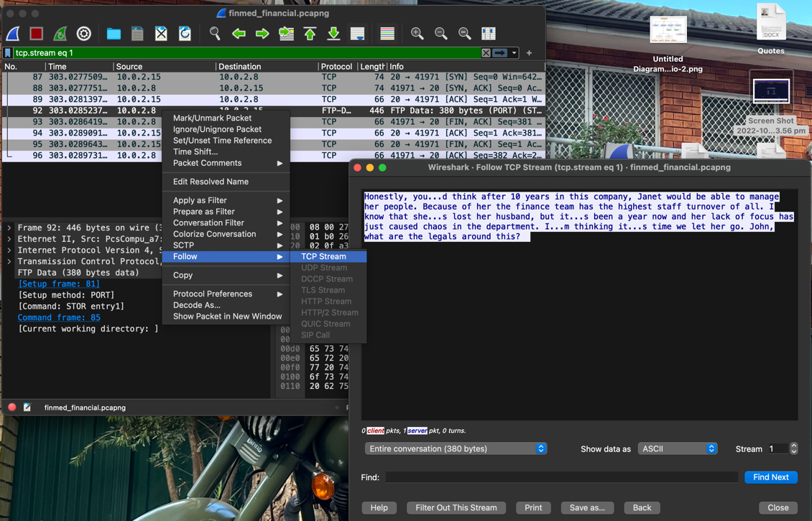
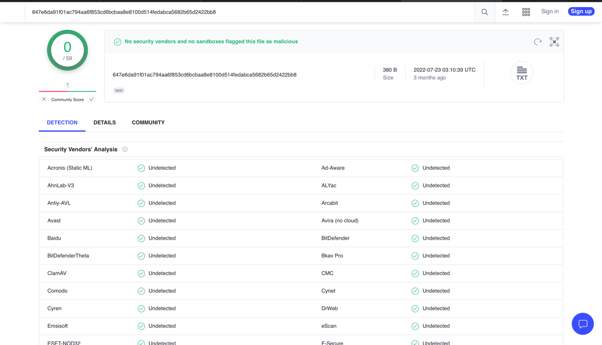
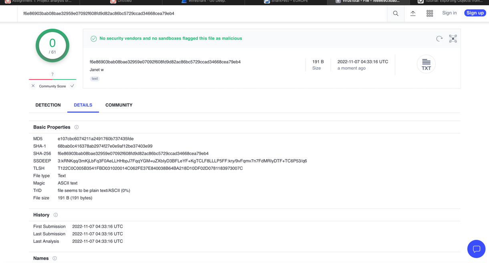
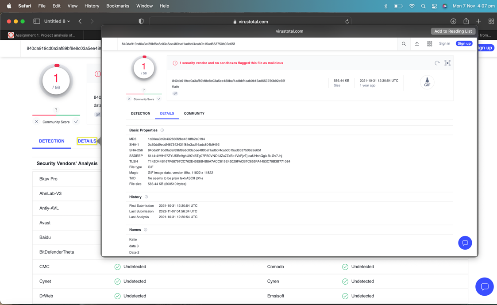

🛡️ Wireshark PCAP Forensics
This project involved analyzing a PCAP file using Wireshark to uncover malicious activity within a simulated financial institution.
📌 Key Findings
- Detected malware through suspicious FTP traffic
- Traced DNS tunneling and unauthorized access patterns
- Identified internal unencrypted communications
🧠 Tools Used
Wireshark, TCP/IP, Network Forensics, Packet Analysis
📸 Screenshots



